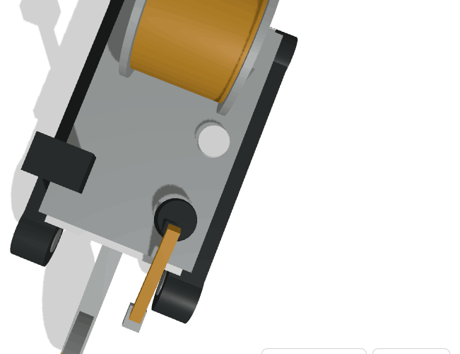
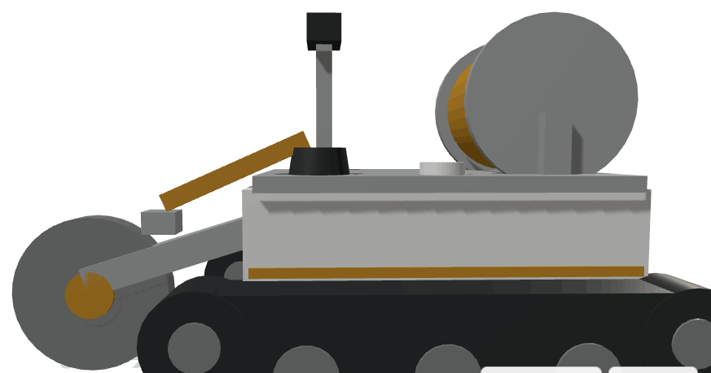
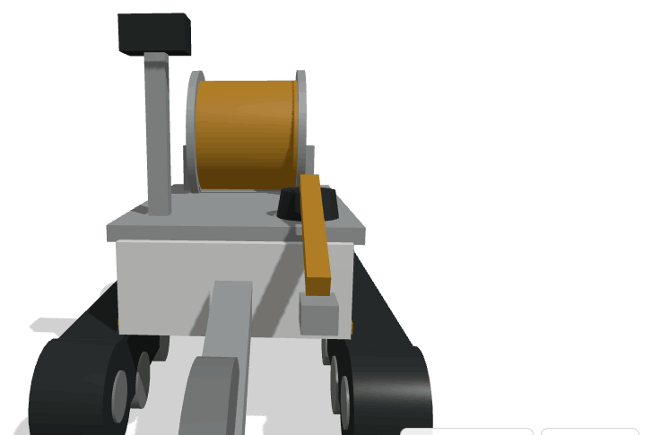
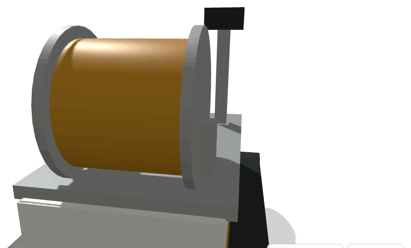

OpenDrone_T
TERRESTRE · CIVILPlataforma terrestre não tripulada sobre lagartas para abertura de vala, instalação e manutenção de redes eléctricas e de telecomunicações enterradas. Desenho inspirado nos equipamentos de vala e enfiamento de cabo, convertido em operação autónoma.




Objectivo
Cadastrar, localizar, instalar e manter redes eléctricas e de telecomunicações sob o solo, reduzindo o tempo de obra, o corte de via e a exposição de trabalhadores.
Capacidades
- Abertura de vala contínua com registo georreferenciado
- Enfiamento e assentamento de cabo a partir do tambor
- Localização de infra-estrutura enterrada existente
- Cadastro digital automático do traçado instalado
- Inspecção e monitorização periódica da rede
Tecnologia
Radar de penetração no solo e localizador electromagnético; posicionamento centimétrico com correcção diferencial; roda de corte instrumentada; manipulador auxiliar; registo em modelo de informação da rede.
Impacto esperado
Aceleração do enterramento da rede eléctrica — factor directo na resiliência a incêndios e a fenómenos extremos — e da expansão de fibra fora dos centros urbanos. Cliente natural nas concessionárias de energia e telecomunicações.
Dados de referência
